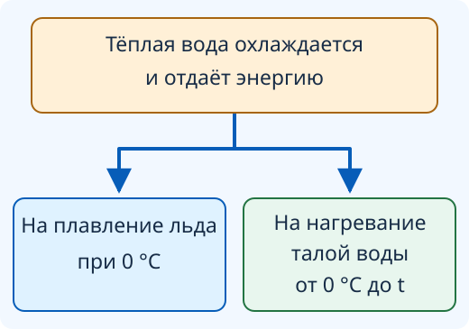

Лабораторная работа «Определение удельной теплоты плавления льда»
Цель работы
Разобраться, как по тепловому балансу определяют удельную теплоту плавления льда, и рассчитать её по заданным массам и температурам.
Как устроен метод
Мысленно рассмотрим теплоизолированный сосуд — калориметр. В нём находится тёплая вода. В воду добавляют лёд, уже имеющий температуру плавления, и после полного таяния устанавливается общая температура воды.
Тёплая вода охлаждается. Отданная ею энергия расходуется на два процесса: плавление льда и нагревание полученной из него воды от нуля до конечной температуры. Если учесть только плавление, результат окажется неверным.

В настоящем опыте потребовались бы калориметр, весы, термометр, тёплая вода и подготовленный лёд. Массу воды находили бы взвешиванием сосуда до и после её добавления; массу добавленного льда — по увеличению массы после его полного плавления. В этой работе вместо показаний приборов используются готовые числа.
Условия расчётной модели
Это упрощённая модель. Реальный калориметр тоже участвует в теплообмене, поэтому при настоящих измерениях его влияние пришлось бы оценить или учесть.
Удельную теплоёмкость воды примем равной:
Для сравнения используем принятое в нашем курсе округлённое табличное значение удельной теплоты плавления льда:
Обозначения и расчёт масс
Обозначим массу пустого сосуда через \(M_0\), массу сосуда с тёплой водой — через \(M_1\), массу сосуда со всей водой после плавления льда — через \(M_2\).
Тогда масса исходной тёплой воды:
а масса добавленного льда:
Начальную температуру тёплой воды обозначим \(t_1\), конечную температуру смеси — \(t\). Для заданной модели должно выполняться \(0<t<t_1\).
Теоретическое обоснование
Количество теплоты, отданное исходной тёплой водой при охлаждении:
Лёд при плавлении получает:
Полученная из льда вода затем нагревается от \(0\,{}^\circ\text{C}\) до \(t\):
Здесь все три количества теплоты записаны как положительные величины. Для нашей модели уравнение теплового баланса имеет вид:
Вычтем из отданной теплоты энергию нагревания талой воды. Остаток приходится на плавление льда. Разделив его на массу льда, получим:
Разобранный пример
Это демонстрационный набор, а не данные самостоятельной работы. Все числа условные; никакого измерения здесь не проводилось.
| Величина | Значение |
|---|---|
| Масса пустого сосуда \(M_0\) | 100 г |
| Масса сосуда с тёплой водой \(M_1\) | 300 г |
| Масса сосуда после полного плавления льда \(M_2\) | 350 г |
| Начальная температура воды \(t_1\) | 40 °C |
| Конечная температура смеси \(t\) | 16 °C |
| Начальная температура льда | 0 °C |
Массы воды и льда
Сначала вычитаем массы, затем переводим единицы
Два направления расходования энергии
Отделяем нагревание воды от плавления льда
Исходная вода отдала:
На нагревание талой воды пошло:
На плавление пришлось:
Удельная теплота плавления
Делим энергию плавления на массу льда
Относительное расхождение с выбранным табличным значением:
Получено близкое к табличному значение. Но близость составленных учебных чисел к справочному значению не является экспериментальным подтверждением закона и не доказывает точность каких-либо приборов.
Ход самостоятельной работы
1. Запишите исходные данные
Используйте другой модельный набор. Числа составлены для учебной обработки; не называйте их собственными измерениями.
| Величина | Значение |
|---|---|
| Масса пустого сосуда \(M_0\) | 90 г |
| Масса сосуда с тёплой водой \(M_1\) | 270 г |
| Масса сосуда после полного плавления льда \(M_2\) | 310 г |
| Начальная температура воды \(t_1\) | 35 °C |
| Конечная температура смеси \(t\) | 14 °C |
| Начальная температура льда | 0 °C |
В этом наборе по условию весь лёд растаял. Укажите в начале записи: «Расчёт по учебным модельным данным; физический опыт не проводился».
2. Выполните расчёты
- Найдите массы исходной воды и добавленного льда. Переведите их в килограммы.
- Проверьте порядок масс \(M_0<M_1<M_2\) и условие \(0<t<t_1\).
- Рассчитайте количество теплоты, отданное тёплой водой.
- Рассчитайте количество теплоты, затраченное на нагревание талой воды.
- Найдите количество теплоты, пошедшее на плавление. Убедитесь, что оно положительно.
- Определите удельную теплоту плавления в Дж/кг и кДж/кг.
- Найдите относительное расхождение с \(\lambda_{\text{табл}}\) по формуле:
Это сравнение результата расчёта со справочным значением, а не оценка инструментальной погрешности реального опыта. Не округляйте промежуточные вычисления раньше времени; итоговое расхождение можно указать до десятых долей процента.
3. Заполните таблицу результатов
| Рассчитываемая величина | Ваш результат |
|---|---|
| Масса исходной воды \(m_{\text{в}}\), кг | |
| Масса льда \(m_{\text{л}}\), кг | |
| Отданная теплота \(Q_{\text{отд}}\), Дж | |
| Теплота нагревания талой воды \(Q_{\text{нагр}}\), Дж | |
| Теплота плавления \(Q_{\text{пл}}\), Дж | |
| Удельная теплота плавления \(\lambda\), Дж/кг | |
| Относительное расхождение \(\delta\), % |
Как оформить вывод
В выводе укажите, какой метод вы изучили, приведите свой результат с единицами и сравните его с табличным. Объясните, на какие два процесса расходовалась энергия исходной воды. Назовите хотя бы одно упрощение модели, которое могло бы повлиять на результат настоящего опыта.
Не пишите «мы измерили» или «опыт подтвердил», если использовали готовые числа. Корректно описывайте выполненную работу: обработку модельных данных и проверку расчёта по тепловому балансу.
Что пришлось бы учитывать в настоящем опыте
Если лёд холоднее нуля, требуется дополнительная энергия на его нагревание до температуры плавления. Если поверхность льда мокрая, часть добавленной массы уже является жидкой водой. Сосуд и термометр также обмениваются энергией с водой, а теплоизоляция не бывает совершенной.
Если после установления равновесия остался лёд, конечная температура смеси чистого льда и воды при обычном давлении близка к нулю. Тогда нельзя считать, что вся добавленная масса льда расплавилась, и применять нашу рабочую формулу без изменения модели.
Вопросы для самопроверки
Проверьте понимание метода
- Почему для определения массы льда нужно вычитать \(M_1\) из \(M_2\), а не массу пустого сосуда?
- Почему нельзя всю отданную водой теплоту считать теплотой плавления?
- Как изменился бы расчёт, если бы исходная температура льда была ниже нуля?
- Можно ли считать выполненный расчёт настоящим измерением удельной теплоты плавления? Объясните.
- Какие данные потребовались бы, чтобы учесть теплоёмкость сосуда?
Домашнее задание: §17.